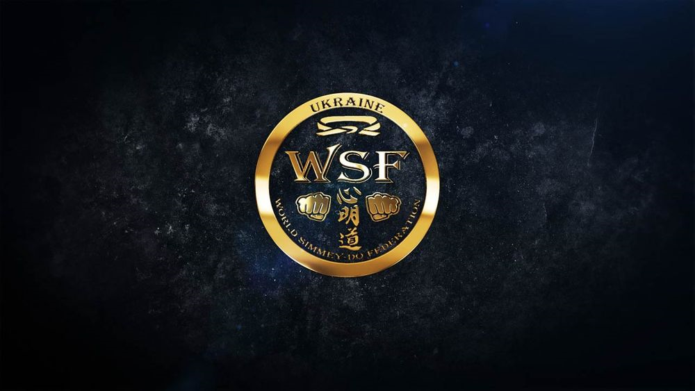

Атестаційна програма · WSF
Шлях до
майстерності.
Вимоги до техніки, фізичної підготовки, ката та спарингу для кожного рівня від білого до чорного пояса.
Переглянути програму
Послідовна підготовка
Кожний рівень продовжує попередній
Під час атестації спортсмен демонструє техніку поточного та всіх попередніх рівнів. Терміни підготовки вказані за програмою федерації. Остаточний допуск до іспиту й актуальні вимоги обов’язково погоджуйте з тренером.